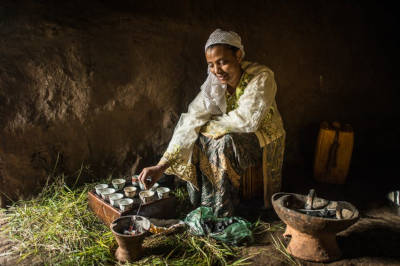
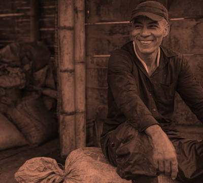
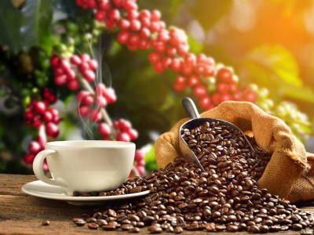

Historia de la Empresa
Desde 1980, en las montañas de Honduras, como pequeña familia decidimos apostar por nuestra pasión: el café. Don Jorge, el fundador, comenzó cultivando a mano pequeñas parcelas de tierra, seleccionando los mejores granos de café para producir una bebida excepcional. Con esfuerzo y dedicación, aprendió los secretos del cultivo y la cosecha artesanal, luchando contra las duras condiciones del terreno y los cambios climáticos que amenazaban su cosecha cada año. Pero su visión siempre fue clara: crear el mejor café hondureño, respetando la tierra y los procesos tradicionales
Con el paso del tiempo, la empresa enfrentó muchos desafíos, desde crisis económicas hasta el auge de grandes corporaciones que amenazaban con desplazar a los pequeños productores. Sin embargo, la familia de Don Jorge nunca renunció a su sueño. Innovaron sin perder la esencia artesanal, mejorando sus técnicas de cultivo y tostado, mientras seguían trabajando codo a codo con las comunidades locales. Cada taza de su café era un testimonio de la dedicación que ponían en su producto
Hoy, la empresa continúa operando con la misma calidad y pasión con la que comenzó. Ahora son reconocidos a nivel nacional e internacional, pero siguen siendo fieles a sus raíces hondureñas y a la producción artesanal que caracteriza su marca. Para ellos, cada grano cuenta una historia de tradición, esfuerzo y compromiso con la excelencia.
